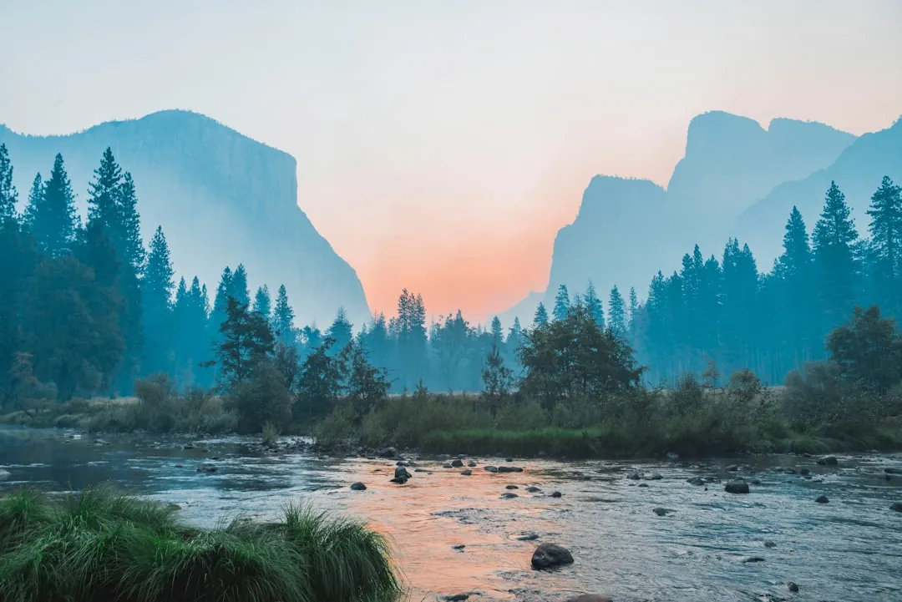
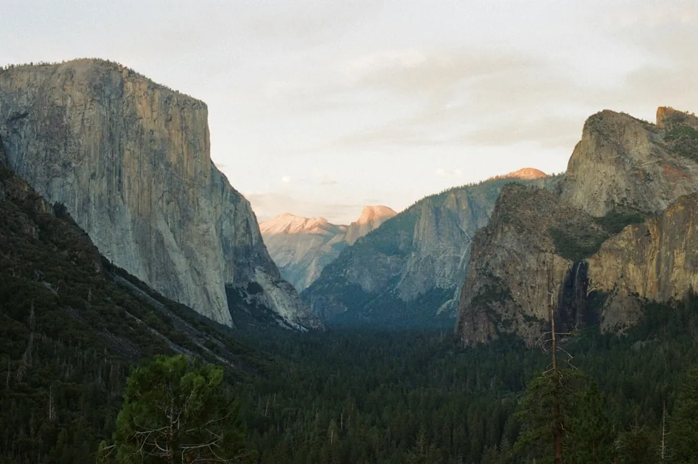

Yosemite National Park Guide: Must-Sees, Valley, Seasons & Tips
· By GoldenPath Guide Editorial Team
The first time you come around that bend in the tunnel and the valley swings open, it stops you. A wall of granite two-thirds of a mile high, a waterfall spilling off its face, and trees so small below that they look like turf. No photograph quite prepares you for the scale of it.
Yosemite is a granite landscape built by glaciers, with a river cutting through the middle. Almost everything a first-time visitor wants to see sits in or just above Yosemite Valley. Here is how to make the most of it.
Yosemite Valley: The Main Event
Start on the valley floor, where the park’s signature landmarks line the walls. Look up for El Capitan, a nearly vertical 3,000-foot face that climbers treat as a proving ground, and Half Dome, the granite dome looming over the east end. The Merced River runs through it all, feeding the falls that thunder each spring.

The best of the valley floor:
- Yosemite Falls — among the tallest waterfalls in North America.
- Bridalveil Fall — a graceful, easily reached cascade.
- El Capitan — viewpoint at El Capitan Meadow.
- Half Dome & Mirror Lake — reflections and dramatic views.
- Tunnel View — the classic overlook that frames the whole valley.
Beyond the Valley
Glacier Point
An overlook high above the valley floor, where the view sweeps over Half Dome, Vernal Fall and Nevada Fall in one wide arc. It’s a short drive from the valley and worth every switchback.
Mariposa Grove
Home to more than 500 mature giant sequoias, including the Grizzly Giant. A shuttle and easy trails make it plenty doable with kids.
Tioga Pass & the High Country
In summer, the Tioga Road climbs into the high Sierra, threading past alpine meadows and the trailheads around Tuolumne Meadows. It’s buried in snow and closed from roughly November through late spring.
Seasons & Entry
Every season rewards a visit, but each one demands a different plan.
| Season | Conditions | Note |
|---|---|---|
| Spring | Waterfalls at peak flow | Crowded; Tioga may be closed |
| Summer | Busiest, all roads open | Book far ahead |
| Fall | Quiet, agreeable, colors | Great time for hiking |
| Winter | Snow, hushed & scenic | Limited access, chains required |
Tips for a Great Visit
- Arrive early. Parking fills by mid-morning in summer; the free valley shuttle is your friend.
- Stay inside the park if you can — overnight guests get earlier access and the valley at dawn, before the day-trippers show up.
- Carry water and layers. The valley gets hot in summer while the high country stays much cooler.
- Give it time. One day covers the highlights; two or three lets you hike and wander deeper.
- Respect wildlife. Bears roam the park — store food properly and keep your distance from animals.
Give yourself at least a full day in the valley. It’s the reason people come, and it is worth every minute.
Hiking Distances & Waterfall Timing
Trail numbers decide the day. The Mist Trail to Vernal Fall footbridge runs 1.6 miles round trip with 400 feet of gain — an hour each way at photo pace. Pushing to the top of Vernal Fall doubles it to 3 miles and 1,000 feet, with granite steps slick from spray through June. Upper Yosemite Fall climbs 3,270 feet over 7.2 miles round trip, a 6–8 hour effort most hikers start before 8am. Waterfall flow peaks in late May and early June; by August, Yosemite Falls often thins to a ribbon while Vernal and Nevada keep running. Carry a liter of water per 2 hours of hiking and a headlamp even for afternoon starts — valley sunsets drop behind the walls by 5pm in October.
Lodging, Fees & Reservation Windows
Sleeping inside the park takes strategy. The vehicle entrance fee runs $35 for 7 days, and peak-season day-use reservations (roughly April through October) must be secured weeks ahead through the official recreation portal. Yosemite Valley Lodge rooms run $250–$350 a night in summer, Housekeeping Camp canvas units near $100–$140, and Upper Pines campsites $36 per night — all booking out within minutes when the monthly release opens (typically 5 months ahead at 7am Pacific). Outside the gates, El Portal motels sit 15 minutes west from around $200, while Mariposa runs 45 minutes and $150–$220. Valley shuttles loop every 10–15 minutes from 7am to 10pm, so park once and ride.